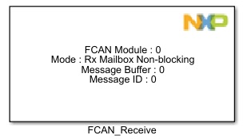
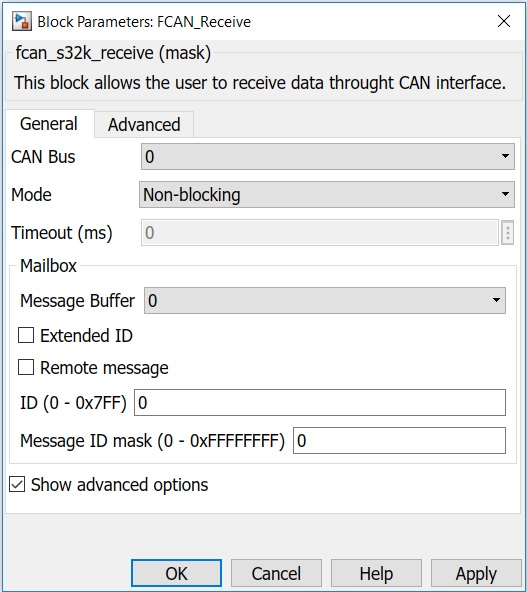
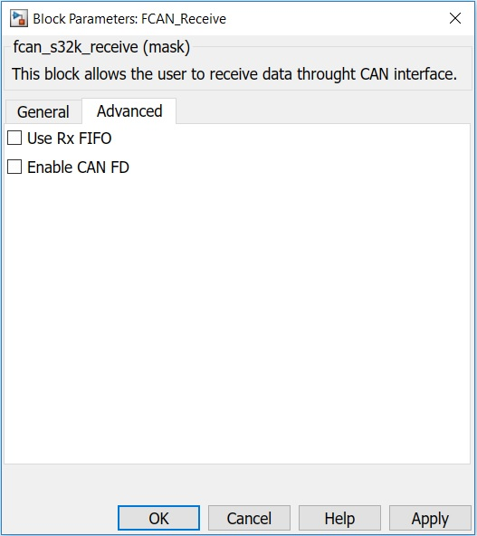

FCAN Receive Block
This block allows the user to receive data through FlexCAN interface.
Block Image
Inputs:
- None
Outputs:
If Blocking mode is selected:- ID (uint8)
- ID Type (uint8)
- Data (uint8(8))
- Length (uint8)
- Time stamp (unit16)
- None
Parameters and Dialog Box
The block dialog consists of the following tabs:
General
CAN Bus
Selects the CAN Bus.
Mode
Select the receive operation mode:
- Blocking - use polling mode
- Non-blocking - use interrupt mode
Timeout
Defines the timeout value in ms for the blocking receive.
Message Buffer
Configures the Message Buffer used for receive operation.
Extended ID
Receive a CAN message with extended ID.
Remote Message
Receive a remote CAN message.
ID
Configures the ID of the message to receive.
Message ID mask
Configures the message ID mask to use for the Message Buffer.
Show advanced options
Shows or hides the advanced options.
Advanced
Use Rx FIFO
Receive a CAN message using Rx FIFO.
Enable CAN FD
Receive a CAN FD message.
Block Dependency
Block Miscellaneous Details
- Refer to FCAN Configuration Block to get information about pin assignment.